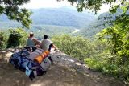

Green Up Your Act

By Mary Reed
As the saying goes, you vote with your dollars every day.
By Attila Horvath
Getting involved in trail building and maintenance does not mean that you should grab a mattock and a chainsaw and start hackin’ away.
Hunters step into gap left by missing predators
By Randy Edwards
In many parts of the Ohio Valley this fall, hunters will be filling a niche once occupied by wolves or mountain lions – that of a predator maintaining the proper balance of ungulates per acre.
By Jaclyn Boland
In 2009, an estimated 50 million motorists will be eligible to receive roadside assistance through their membership in AAA. What they will also receive with that membership is an organization that lobbies for roads, cars and gasoline while lobbying against public transportation, bike paths and the Clean Air Act.
By Michelle Anderson
BP (formerly British Petroleum) spent millions of dollars to rebrand itself as an environmentally conscious company, Beyond Petroleum, promoting its development of solar and other alternative energy s
By Cathy Wilson
There are fake grassroots organizations – called “Astroturf” – that claim to be pro-environment when in fact they are funded by the industries responsible for environmental degradation.
By Cathy Wilson
There are unwelcome, harmful plants that invade and spread throughout natural areas, but their green leaves and beautiful flowers often disguise them as innocent and unassuming.
By Cathy Wilson
If you enjoy spending time on the water, then water conservation should definitely be a priority. Here’s why it’s important:
Enjoy the outdoors without leaving your back yard
By Cathy Wilson
Spring is right around the corner, and if thoughts of blossoming flowers and fresh produce have ever inspired you to create a garden of your own, now is the perfect time to give it a try.
But a little help from you doesn’t hurt
By Cathy Wilson
Scrapping the habit of tossing all your waste into the garbage can starts with, well, scraps.
A good intention, but a dangerous habit
By Cathy Wilson
A woman walking her dog in North Hills, WV last year was attacked by a doe whose fawn was nearby.
By Cathy Wilson
Ribbons, bows, wrapping paper and packages upon packages of batteries – these are some of the staples of the holiday season.
By Cathy Wilson
While those who seek to reduce their carbon footprint do so with the best of intentions, there is growing concern that some carbon offs
By Mary Reed
There are plenty of reasons to be a treehugger: trees give us shade, campfire wood, toboggans and treehouses. Plus, they beautify the world.
By Mary Reed
You know the third practice in the waste reduction hierarchy, it’s recycle. But let’s get back to that word hierarchy – recycling is what you do only after reducing and reusing.